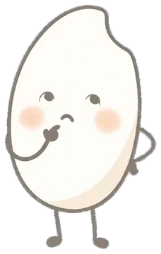
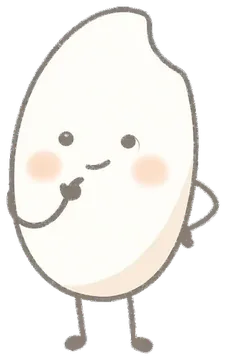
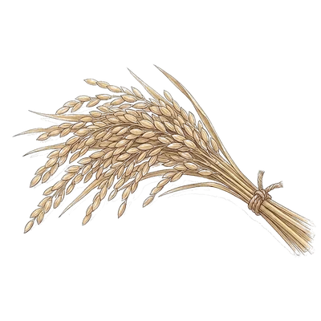
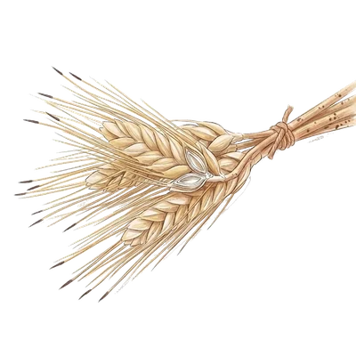
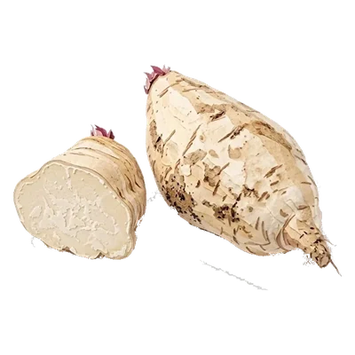
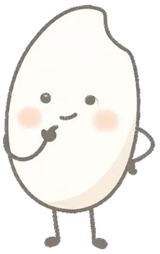
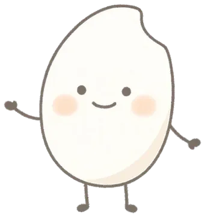
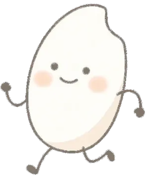
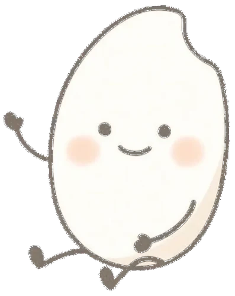
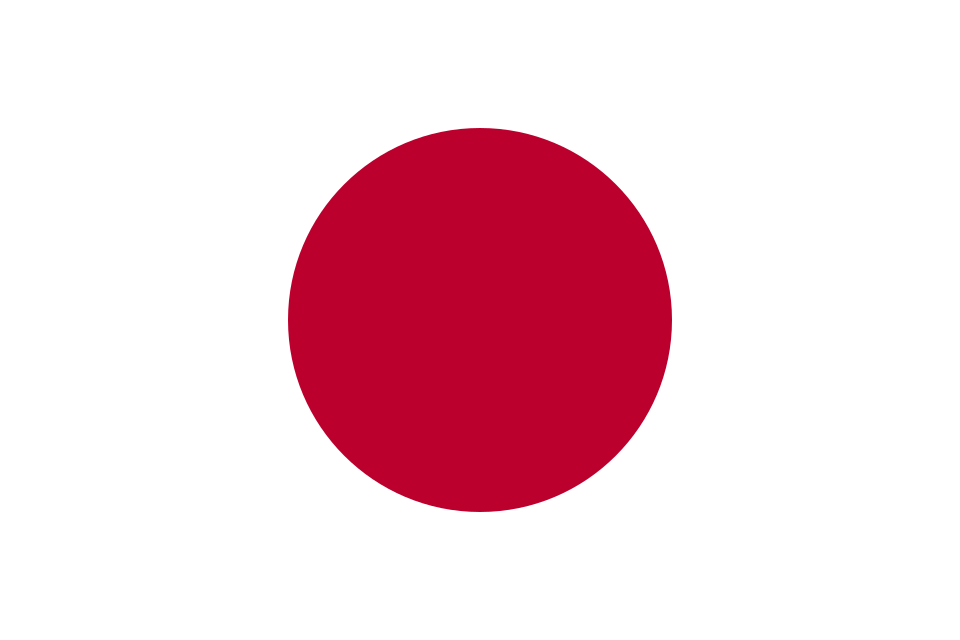

今夜の一杯を、もっと美味しく。
ラベルの言葉や造り方の秘密を少し知るだけで、いつものお酒が違った表情を見せてくれます。
知ればもっと美味しくなる、お酒の知識を深めてみませんか？
※お酒のアイコンをタップしてください。
日本酒ってどんなお酒？
① 米と水が織りなす「醸造酒」
日本酒は、米、米麹、水を主な原料として発酵させて造る「醸造酒」の一種。古くから日本特有の製法で造られてきた伝統的なお酒です。
② 世界一の「高アルコール度数」
ワインやビールと同じ発酵酒ですが、実はその中で世界で一番アルコール度数が高くなる珍しいお酒でもあります。
③ 職人が編み出した「奇跡のスゴ技」
甘みのないお米を、目に見えない菌（麹）の力で「甘くしながらアルコールに変える」という、世界中のどのお酒にもない高度な技術で造られています。


「甘口・辛口」って
どう決まるの？
実は「糖分と酸味のバランス」
ラベルの「日本酒度（糖分の量）」がプラスなら辛口、マイナスなら甘口とされますが、実際の味わいは「酸味」とのバランスで決まります。
同じ糖分でも、酸味が強ければキリッと辛く引き締まり、弱ければまろやかな甘味を感じやすくなります。表記はあくまで目安に、ご自身の好みのバランスを探してみてください。
焼酎ってどんなお酒？
① 日本が誇る「蒸留酒」
焼酎は、穀物や芋などを発酵させた後に、熱を加えてアルコール分を抽出して造られる「蒸留酒」の仲間です。
② 「糖質・プリン体ゼロ」の嬉しいお酒
アルコールと香りの成分だけを抽出するため、糖質やプリン体を含まず、翌日に残りにくく身体に優しいのが特徴です。
③ 世界でも珍しい「お湯割り」文化
温かいお湯で割って美味しく飲めるお酒は、世界的にもかなり希少。温めることで素材の香りがふわっと広がり、心がホッと落ち着きます。
「醸造」と「蒸留」のちがい



（これが「蒸留」）
蒸留すると、アルコール分と香りの成分が濃く集まります。
ウイスキーってどんなお酒？
① 穀物から生まれる「蒸留酒」
ウイスキーは、大麦などの穀物を発酵・蒸留し、木製の樽で長い年月をかけてじっくりと熟成させて造られるお酒です。
② できたては「無色透明」
グラスで琥珀色に輝くウイスキーですが、実は造りたての原酒は焼酎のように無色透明だってご存知でしたか？
③ 人間と自然の「共同作業」
美しい色合いとバニラのような甘い香りは、樽の中で眠ることで初めて生まれます。半分は人間が、残りの半分は「自然の力」が造り出すロマンチックなお酒です。
特定名称酒の主な種類
原料や「精米歩合」などの基準を満たした日本酒を「特定名称酒」と呼びます。
分類の基本は、以下の3つのキーワードの組み合わせです。
・純米：お米と水だけで造る
・本醸造：アルコールを足してスッキリ仕上げる
・吟醸：お米をよく削って香り高く仕上げる




そもそも
「精米歩合」とは？
どれくらい「削って残した」か
お米の外側には雑味の成分があるため、削るほどスッキリとして華やかな香りが生まれやすくなります。
例えば「精米歩合60%」は、外側を40%削り落とし、中心部の60%だけを贅沢に使ったという意味になります。
お米を削ってみましょう
つまみを右へ動かすと、お米がどんどん削れていきます。削る量によって、名乗れるお酒の名前が変わります。
※イメージ図です。「吟醸」「大吟醸」と名乗るには、精米歩合に加えて、低温でじっくり発酵させる「吟醸造り」などの条件も必要です。
さまざまな「造り」
日本酒の味わいは、お米の削り方だけでなく、発酵や加熱処理といった細かな「造り」の違いでも大きく変化します。
代表的な製法をご紹介します。
「火入れ」は何回？
お酒の種類を選ぶと、火入れ（加熱殺菌）のタイミングが光ります。
吾熊の日本酒
現在、当店でご用意している日本酒です。
銘柄をタップすると、それぞれの特徴や味わいの解説を見ることができます。
※ご注文は口頭で承ります
原材料による「味」の違い
焼酎の面白さは、なんといっても「原料のバリエーション」にあります。使う素材の個性がそのまま香りや味わいに表れるため、気分や料理に合わせて使い分けるのがおすすめです。
※アイコンをタップすると解説が表示されます
ラベルの正体
焼酎のラベルには、そのお酒が「どんな風に造られたか」のヒントがたくさん隠されています。代表的な言葉の意味を知っておくと、好みの味を見つけやすくなります。
気圧で、味がかわる
※イメージ図です。ボタンを切り替えて、くらべてみてください。
吾熊の焼酎
現在、当店でご用意している焼酎です。
銘柄をタップすると、それぞれの特徴や味わいの解説を見ることができます。
※ご注文は口頭で承ります
ラベルの正体
ウイスキーのラベルに書かれている言葉は、そのお酒の「履歴書」のようなもの。どんな原料で、どんな場所で造られたかが隠されています。言葉の意味が少しわかるだけで、好みの味に出会う確率がグッと上がります。
ブレンドしてみましょう
つまみを動かして、モルトとグレーンの割合を変えてみましょう。
100%モルト
100%
※割合はイメージです。実際の配合は銘柄ごとに異なります。
世界のウイスキー
① 世界が認める「5つの聖地」
ウイスキーは世界中で造られていますが、その中でも特に品質と人気が高い5つの生産地は「世界5大ウイスキー」と呼ばれています。
② 実は「日本」もトップ5の1つ！
歴史あるスコットランドやアイルランドと肩を並べ、日本もそのトップ5に選ばれているんです。
③ 世界を魅了する「ジャパニーズ」
日本の職人の繊細な技術は世界中から大絶賛されており、現在は空前の「ジャパニーズウイスキー・ブーム」が巻き起こっています。日本人としてなんだか誇らしい気持ちになりますね。

ジャパニーズ（日本）繊細で、バランスが良いさまざまな個性
ウイスキーの奥深い世界に足を踏み入れると、造り手の熱いこだわりや、自然がもたらす偶然の産物に出会います。ウイスキー好きがバーカウンターでついつい語りたくなってしまう、ツウなトピックをご紹介しましょう。
ウイスキーの風味の大部分は「樽」で決まるとも言われます。以前何を入れていた樽かによって、お酒に驚くほどの魔法がかかるのです。
吾熊のウイスキー
現在、当店でご用意があるウイスキーです。
銘柄をタップすると、それぞれの特徴や味わいの解説を見ることができます。
※ご注文は口頭で承ります